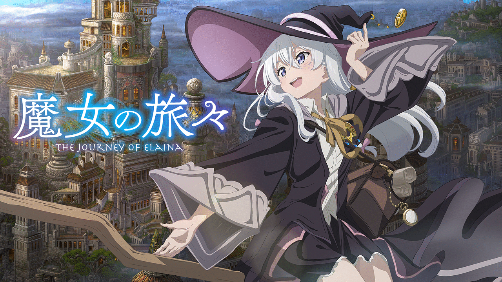
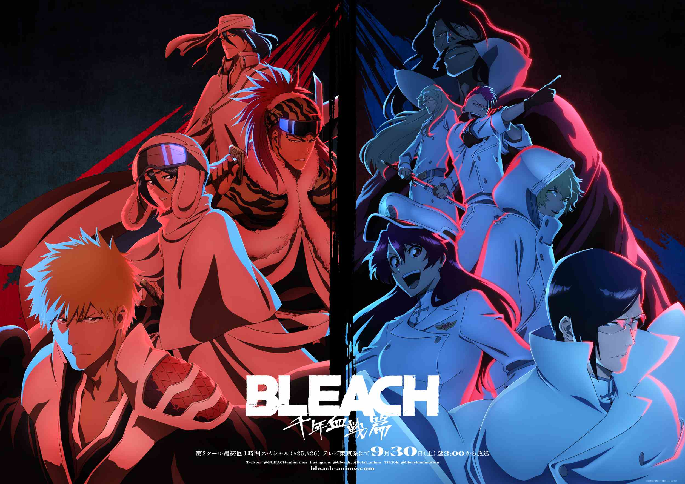
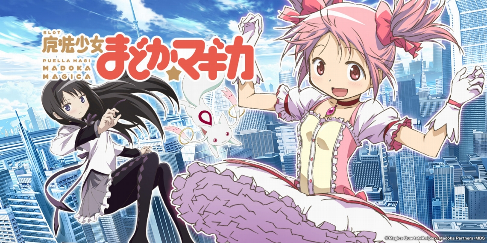
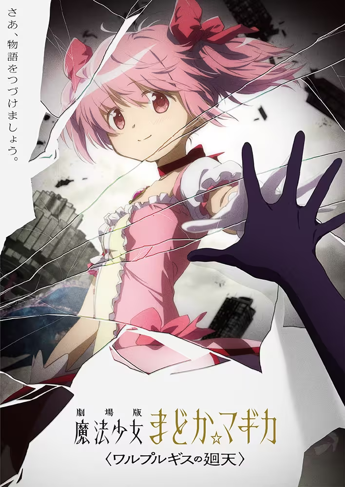
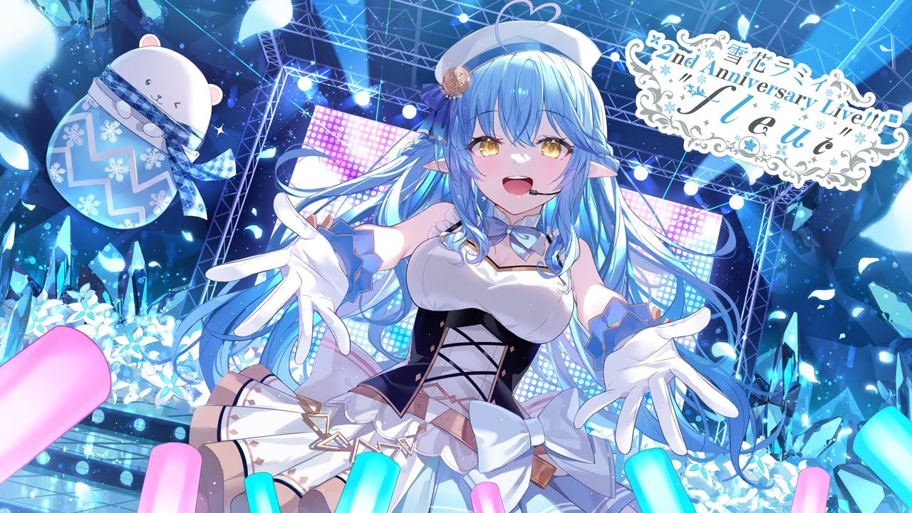

趣味
ここでは私の趣味を紹介します。
アニメ鑑賞
私がこれまで見てきたアニメでTOP３を紹介します
３位＜魔女の旅々＞
<あらすじ>幼いころに読んだ旅の物語に憧れて、流されるように気ままな長い旅を続けています。
この広大な世界を自由に渡り歩き、わけのわからない可笑しな人や、誰かの美しい日常に触れながら、
彼女は旅人として、これといった目的もなく、色々な国や人との出逢いを繰り返します。
少し鬱展開ありですが一話完結型のアニメなので見やすいです。
２位＜ＢＬＥＡＣＨ＞
結構昔の作品だと思われがちですが、漫画は完結してますがアニメはまだ完結していないアニメです。
１０年ぶりに続きである「千年血戦篇」は分割4クールで放送されていて、第1クールが2022年10～12月、
第2クールが2023年7～9月に放送されて、続きがすごく気になります。
１位＜魔法少女まどか☆ マギカ＞

鬱作品として有名なまどマギですが、伏線回収やカップリングなどを見ると、
すごく作り込まれた作品だと「すげぇ」と思うほどです、個人的にこれ以上の作品はないと思ってます。
色々言い過ぎるとネタバレになりそうなのでここまでにしておきます。
今年公開予定の１０年ぶりの映画のワルプルギスの廻天が来年に延期になりました。
「１０年も待ってるんだ１年なんてすぐだよ。」
VTuber
私はVTuberが大好きです。中でもホロライブというグループの雪花ラミィが大好きです。
